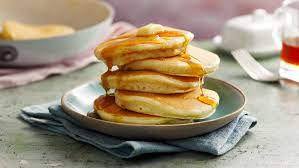

Pancake prep

Description
Mix dry and wet ingredients separately, then whisk together until just combined. Cook on a hot griddle or pan until golden brown and cooked through. Serve with your favorite toppings.
Ingredients for Pancakes:
- 1 cup all-purpose flour
- 2 tablespoons sugar
- 2 teaspoons baking powder
- 1/4 teaspoon salt
- 1 egg
- 1 cup milk
- 1 tablespoon vegetable oil
Procedure
- Whisk together the dry ingredients in a bowl.
- Whisk together the wet ingredients in a separate bowl.
- Pour the wet ingredients into the dry ingredients and whisk until just combined.
- Heat a griddle or frying pan over medium heat and grease it with butter or cooking spray.
- Pour the batter onto the hot griddle or pan in 1/4 cup portions and cook for 2-3 minutes per side, or until golden brown and cooked through.
- Serve with your favorite toppings, such as syrup, butter, fruit, or whipped cream.